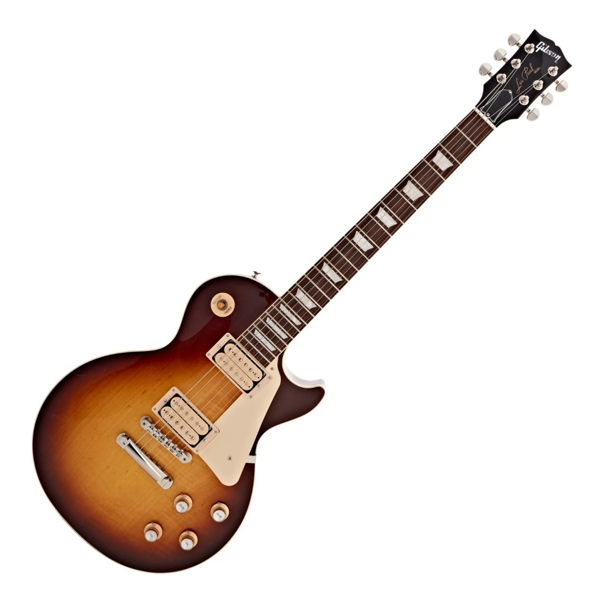
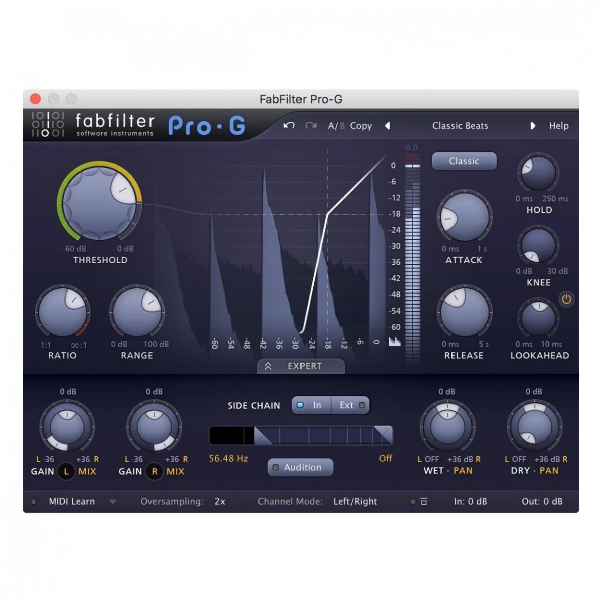
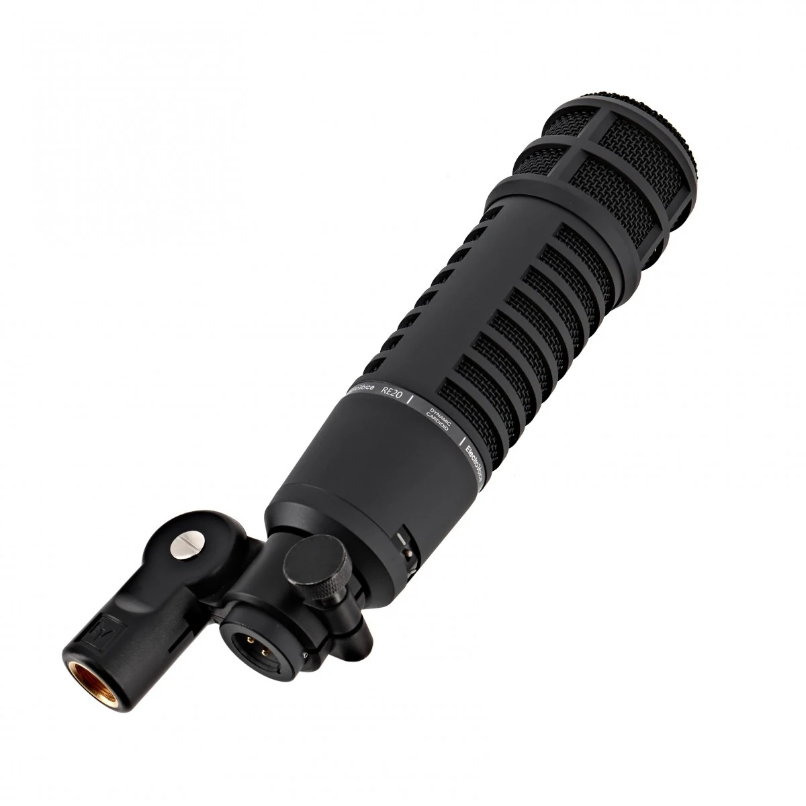
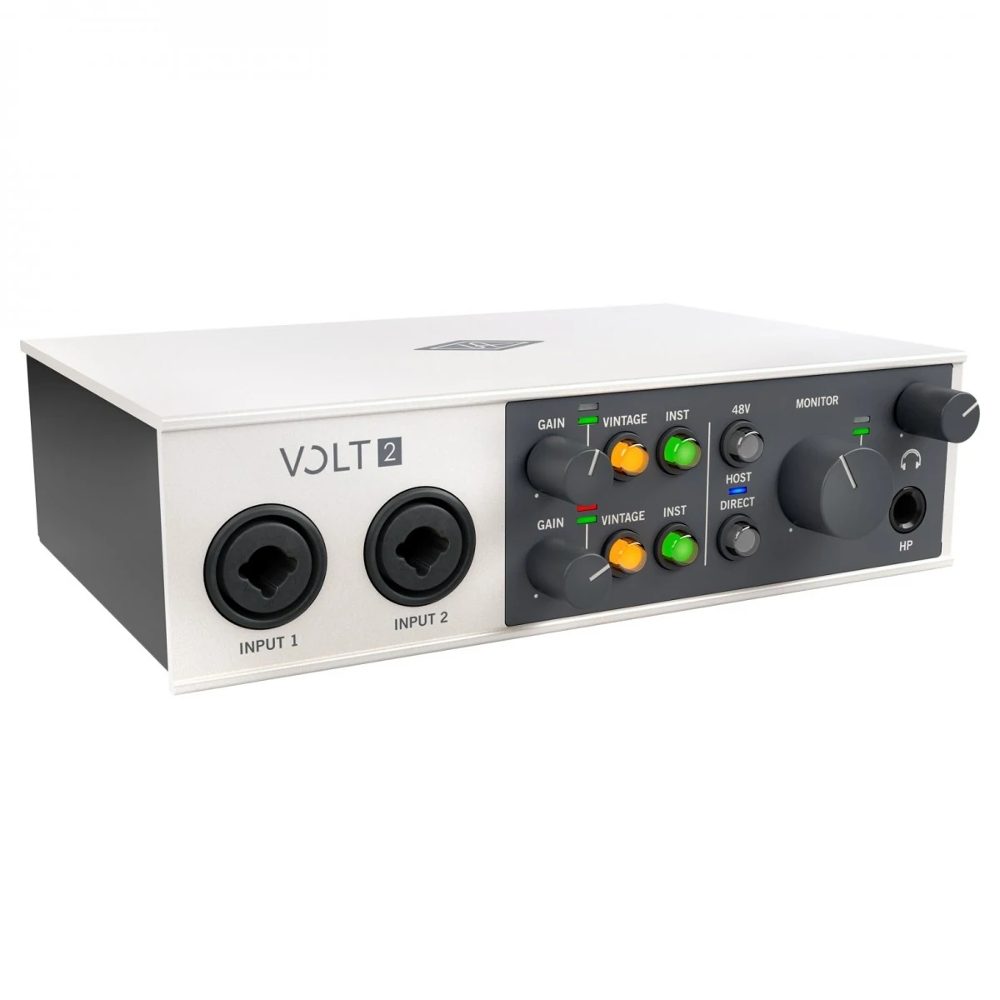
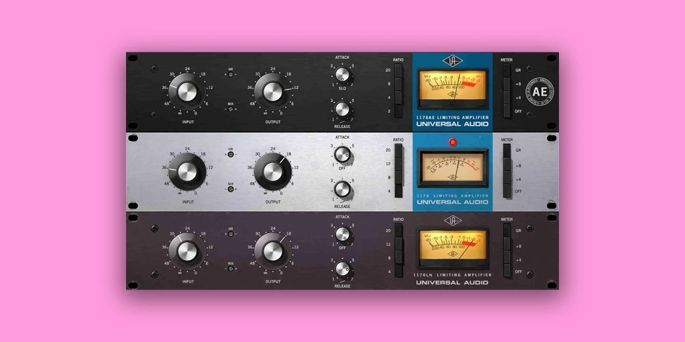
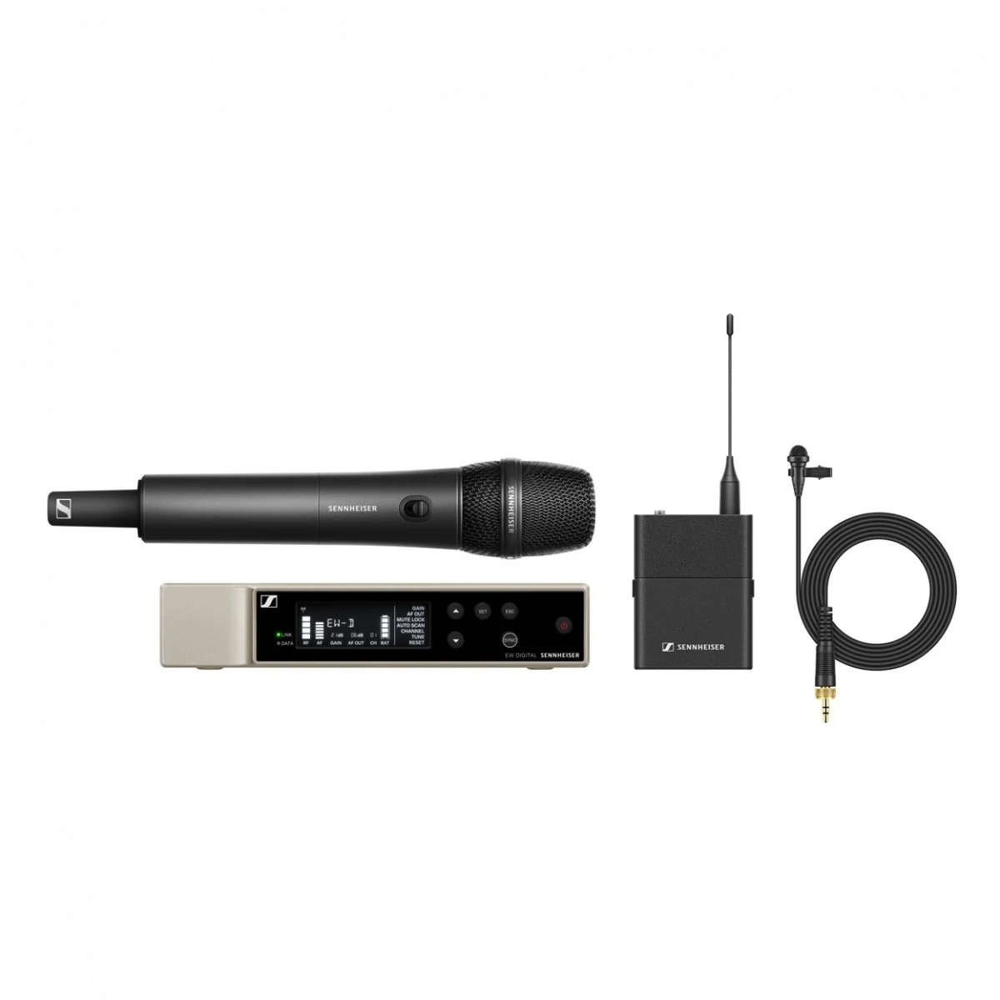
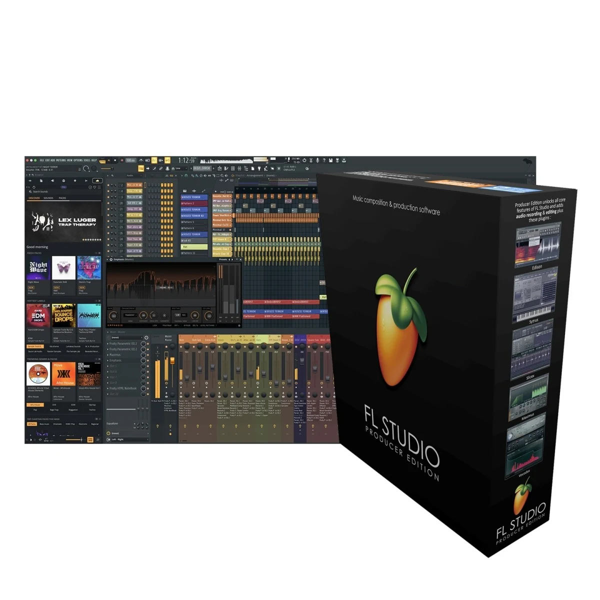
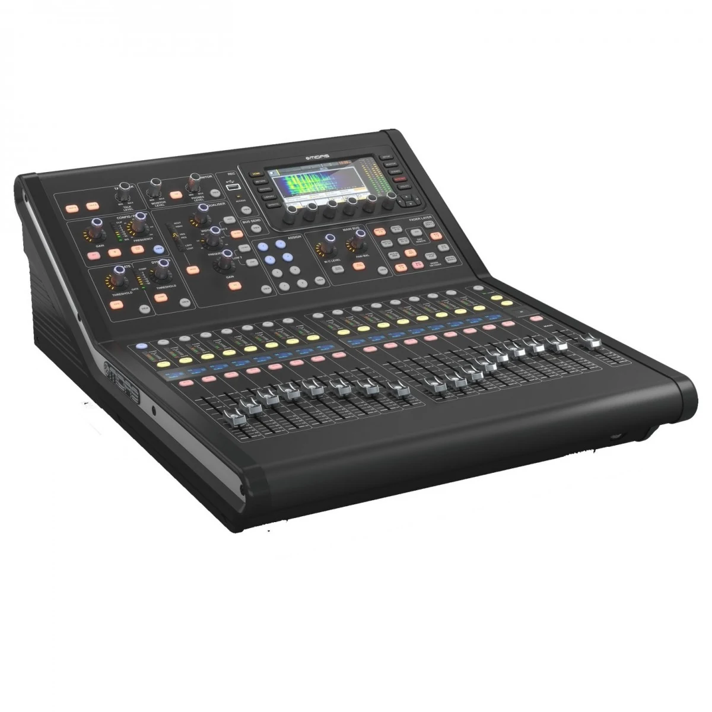
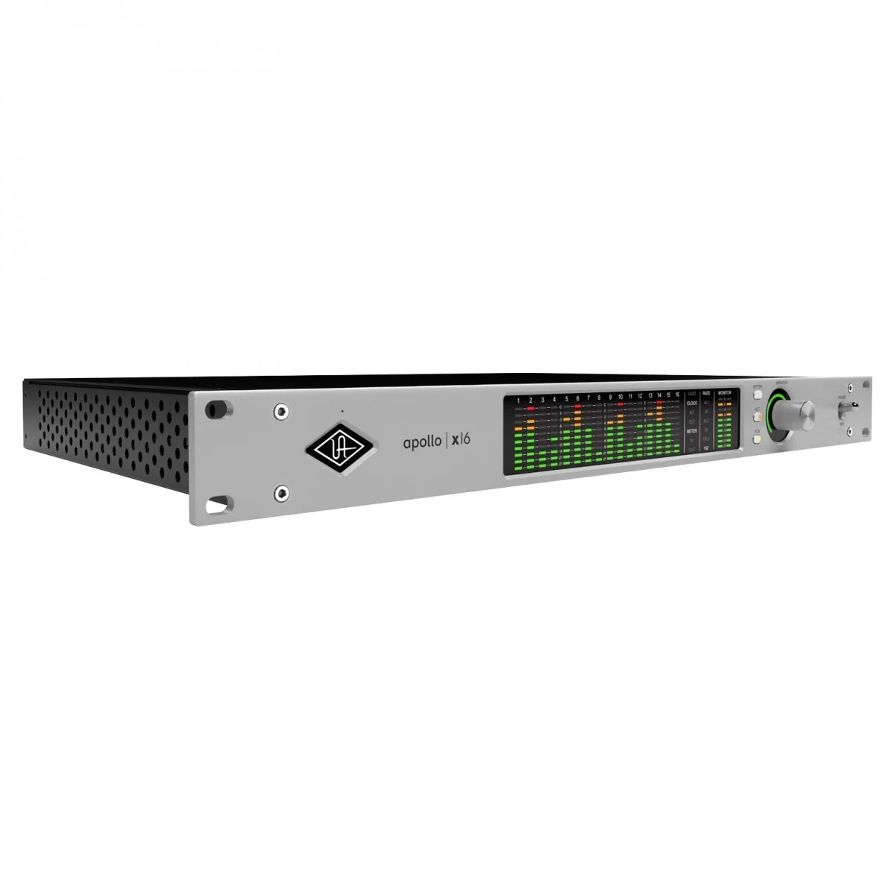

Ofertas de hoy en equipo musical
Ofertas diarias en el equipo que usan los músicos de todo el mundo.

Gibson Les Paul Standard '60s
La máquina de rock definitiva. Pastillas Burstbucker, cuerpo de caoba con tapa de arce y ese inconfundible sustain Les Paul. La construcción tradicional de mástil encolado deja que las notas respiren, y las pastillas llevan el ampli a un gruñido saturado, ideal para rock clásico y hard rock.

Focusrite Scarlett 2i2 4th Gen
La interfaz de audio más vendida del mundo acaba de mejorar. 120dB de rango dinámico, modo Air y Loopback para streaming. Conversión con calidad de estudio. La conversión de 24 bits captura tomas limpias, el modo Air suma presencia y la ganancia mueve micros dinámicos.

FabFilter Paquete Total
El kit definitivo de mezcla y masterización. Pro-Q 4, Pro-C 3, Pro-L 2, Pro-R 2, Saturn 2, Timeless 3, Volcano 3, Twin 3 y más. La colección cubre EQ, compresión, reverb, saturación y limitación, con formatos VST2, VST3, AU y AAX de latencia mínima.

Electro-Voice RE20
El estándar del broadcast. La tecnología Variable-D elimina el efecto de proximidad. La opción definitiva para podcasting, locución y bombos. El diseño mantiene el nivel predecible si el intérprete se acerca o proyecta, ideal para sesiones largas, aunque renuncia al aire y al ataque.

Audient iD14 MkII
Preamplificadores con calidad de consola en una interfaz compacta. Los mismos previos de micr├│fono Clase A que se encuentran en la consola ASP8024 de Audient. Salidas de auriculares duales y entrada DI JFET para instrumentos. Sus previos dan 58 dB y ScrollControl gestiona los monitores.

Universal Audio Volt 2
Calidad UA con manejo simple y directo. El modo Vintage Mic Preamp emula el clásico previo de tubo UA 610. MIDI I/O y construcción sólida con diseño retro que destaca. Dos previos dan 55 dB limpios, con conversión de 24 bits/192 kHz y monitorización directa.

Colección UA 1176 Classic Limiter
La colección definitiva del compresor más famoso del mundo. Tres emulaciones auténticas del icónico 1176 — Rev A Bluestripe, Rev E Blackface y 1176AE Anniversary Edition. Compresión FET ultrarrápida con ese inconfundible punch y carácter. Carece de EQ de sidechain, mezcla paralela y lookahead.

FabFilter Pro-Q 4
El ecualizador más avanzado del mundo. Nuevo procesamiento de dinámica espectral convierte resonancias problemáticas en oportunidades musicales. EQ Sketch para dibujo intuitivo de curvas, modos de saturación vintage y soporte Dolby Atmos hasta 9.1.6. Ofrece hasta 24 bandas de EQ quirúrgica y analizador clarísimo.

FabFilter Pro-C 3
El compresor definitivo. 14 estilos de compresión desde control transparente de masterización hasta pumping agresivo. Modos Character con saturación analógica, soporte Dolby Atmos y EQ de side-chain avanzado. Todo lo que necesitas en un elegante compresor. Cubre calidez opto, pegada VCA y mordiente FET.

Vox AC30
El sonido del rock británico. 30 vatios de potencia todo-válvulas a través de dos altavoces Celestion de 12 pulgadas. El icónico brillo que definió a The Beatles, Queen e innumerables bandas de rock británico. El canal Top Boost ofrece esa presencia cortante inconfundible. Para guitarristas que quieren el sonido que hizo historia en el rock.

Sennheiser EW-D Sistema Inalámbrico Dual
Sistema inalámbrico digital dual con transmisores de mano y petaca. Incluye receptor EW-D EM, mano SKM-S con cápsula MMD 835 y petaca SK con lavalier ME 2. 134 dB de rango dinámico, 1.9 ms de latencia, app Smart Assist. Hasta 90 canales, 56 MHz de ancho de banda, 90 m de alcance.

Shure BLX24R/SM58 Inalámbrico
La versión inalámbrica del icónico SM58. Transmisión UHF confiable, construcción de metal resistente y el mismo patrón de captación cardioide que hizo del SM58 un estándar del escenario. Batería hasta 14 horas. Configuración sencilla con escaneo automático de frecuencia.

Ableton Live 12 Suite
El estándar de la industria para producción de música electrónica y performance en vivo. Motor warp, integración Max for Live. Flujo de trabajo excepcional. La vista Session gestiona el lanzamiento de clips en tiempo real y la grabación de interpretaciones en la vista Arrangement.

FL Studio Edición Producer
El favorito de los creadores de beats. Flujo de trabajo basado en patrones, piano roll intuitivo y actualizaciones gratuitas de por vida. El icónico secuenciador de pasos agiliza la programación de batería, y el fluido Piano Roll sirve tanto para melodías como para beats.

Reason Studios Reason 14
Un DAW único construido alrededor del Rack virtual — conecta instrumentos y efectos como si fueran hardware real. Funciona como DAW independiente o como plugin en cualquier otro DAW. Poderoso secuenciador, sintetizadores legendarios y biblioteca de sonidos masiva.

Celemony Melodyne 5
El estándar de la industria para corrección de tono y afinación vocal. Edita notas individuales dentro de audio polifónico — corrige tiempo, tono y formantes con precisión quirúrgica. Usado en prácticamente todas las producciones vocales profesionales. Funciona en VST2, VST3, AU y AAX.

Native Instruments Komplete 26 Definitivo
La colección definitiva de Native Instruments. Más de 150 instrumentos y efectos — Kontakt 8, Massive X, Guitar Rig 7, Session Strings, Cremona Quartet y herramientas para música de cine. El paquete definitivo para productores, compositores y diseñadores de sonido.

Midas M32R LIVE
La consola de mezcla digital profesional en formato compacto de rack. 40 canales de entrada, 16 preamplificadores de micrófono Midas PRO, 25 buses de mezcla, 8 motores FX estéreo y grabación multipista en doble SD. Montable en rack con la legendaria calidad de sonido Midas que exigen los mejores ingenieros de gira.

Universal Audio Apollo x16 Gen 2
Interfaz de audio profesional 18x20 Thunderbolt 3 con conversión Apollo X Gen 2 de nueva generación. Convertidores de 133dB de rango dinámico, HEXA Core UAD DSP con 6 procesadores SHARC+, preamplificadores Unison, soporte para monitores duales. El corazón de cualquier estudio profesional.

RME Fireface UFX III
Interfaz de audio USB 3.0 profesional de 188 canales con la legendaria estabilidad de drivers RME. Conversión D/A de 135dB, SteadyClock FS, TotalMix FX con mezcla de 48 canales, grabación independiente DURec a USB, MADI I/O y 4 entradas de instrumento hi-Z. La referencia en fiabilidad.


Ofertas Diarias en Telegram
Publicamos ofertas nuevas cada 12 horas en nuestro canal gratuito de Telegram. Ofertas, bajadas de precio y códigos de descuento — sin spam, nunca.
Únete al canal de Telegram